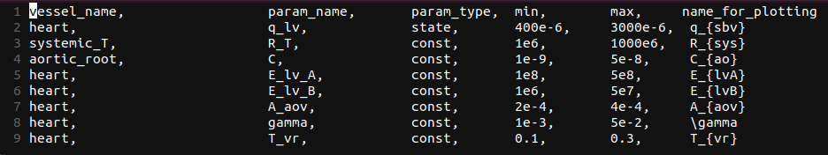
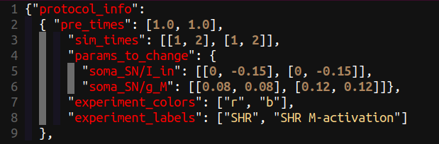
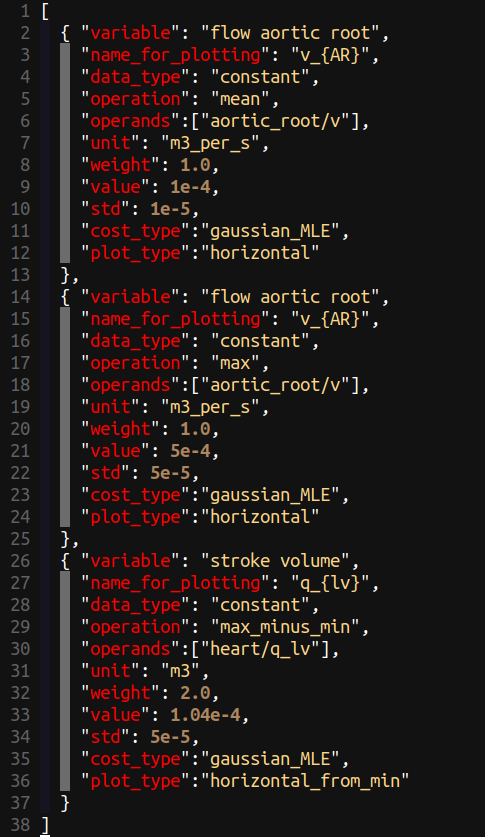
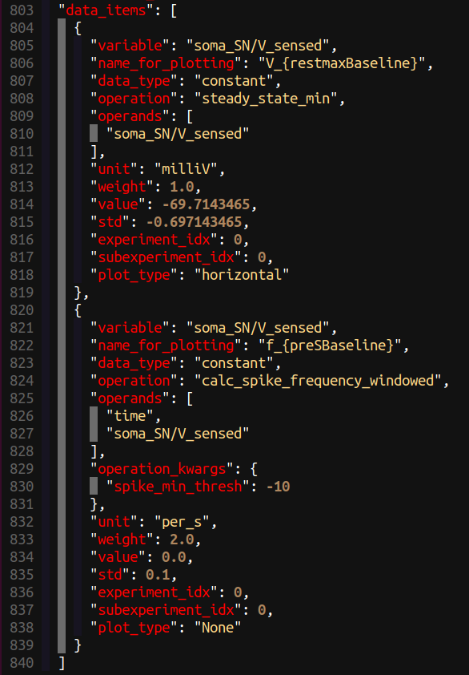
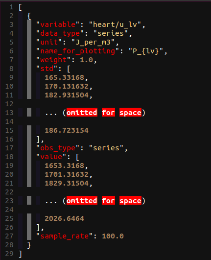
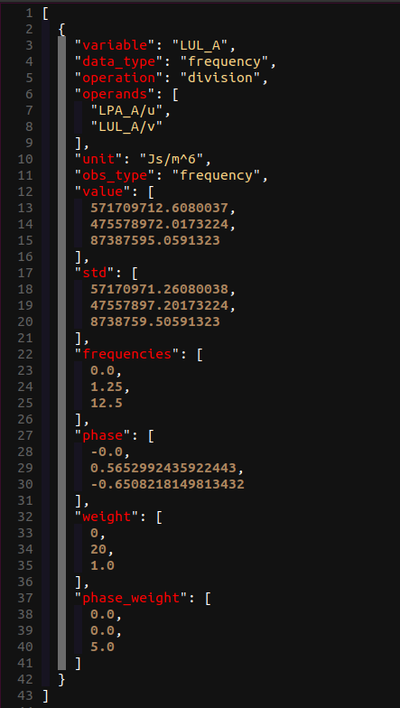
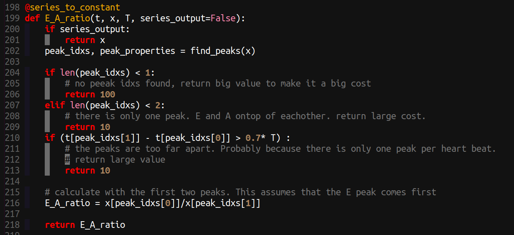
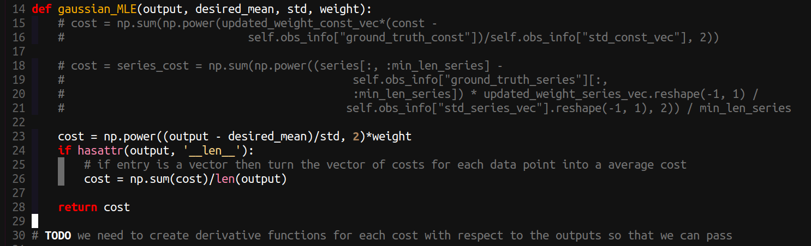

Parameter Identification
The parameter identification part of Circulatory_Autogen is designed to allow calibration of a model to experimental or clinical data. It implements an optimisation method to find the best fit parameters that give a minimal (local minima) error difference between the model output and the ground truth observables (experimental or clinical data or user specified). The creation of below two configuration files is necessary:
- params_for_id
- param id observables
Those files should be added to the [CA_dir]/resources directory (or your custom resources_dir). Proper names of the files are [file_prefix]_params_for_id.csv and [file_prefix]_obs_data.json, respectively. You can also set params_for_id_file in user_inputs.yaml if you want to use a non-standard filename.
Prerequisites
- A generated model (see Model Generation and Simulation).
param_id_obs_pathandparams_for_idfiles in your resources directory.- OpenCOR Python environment with MPI if running in parallel.
Creating params_for_id file
This file defines which parameters (constants and initial_states) within your model that you will vary in the parameter id process and their allowed ranges (prior distribution). Following is an example of the params_for_id.csv file.

The entries in the file are detailed as follows:
- vessel_name: the name of the vessel/module the parameter is in
- param_name: the name of the parameter in the cellml module (not including the "vessel_name" suffix that is included in the
[file_prefix]_parameters.csvfile). - param_type: "state" or "const"; whether the parameter is the initial value of a state or a const.
- min: The minimimum of the range of possible values (min of the uniform distribution).
- max: The maximum of the range of possible values (max of the uniform distribution).
- data_item_name: The unique name of this prediction, as for a
data_item. - trace_name_for_plotting: The name (latex format) used when automatically plotting comparisons with observables and predictions.
Note
param_type will be deprecated. All should be "const". Initial values that need to identified should be defined as constants within the cellml module.
Priors
Without further columns every parameter has a uniform prior on [min, max]. An optional
prior column chooses another, with its settings in further columns:
prior |
Columns | Notes |
|---|---|---|
uniform (default) |
— | flat on [min, max] |
normal |
prior_mean, prior_std |
default mean: the middle of the range; default std: a sixth of it |
exponential |
prior_scale (or prior_lambda), prior_origin |
decays from prior_origin; scale defaults to max / prior_lambda |
Each prior is truncated to [min, max] unless the unbounded column is set, in which case
the range is derived from the prior. Priors shape the log posterior, so they affect MCMC (do_uq)
and optimisers run with objective_function: likelihood (the genetic algorithm); a calibration
that minimises the cost does not see them. A calibration workflow can also give a step a prior
over several parameters at once, from an earlier step's posterior (see
Calibration workflows).
JSON form and schemas
params_for_id may also be written as JSON ([file_prefix]_params_for_id.json); a CSV is
converted to that form when it is read (ObsAndParamDataParser.params_for_id_csv_to_json), each
row becoming one entry of "params" with vessel_name "a b" and param_name "C" as
"targets": ["a/C", "b/C"] and the prior_* columns under "prior_params". The JSON form also
takes a "defaults" block and modifier entries ("modifies", "modifier", "inputs"). Every
input file has a JSON Schema shipped in libcuflynx/schemas/ (params_for_id.schema.json,
obs_data.schema.json, module_config.schema.json, module_array.schema.json; load one with
libcuflynx.schemas.load_schema), describing each key and its default. libcuflynx checks every
file against its schema when it reads it, so editors and other tools validating against the
schema agree with libcuflynx. An error lists every problem, each with where it is (an item by
its name, e.g. data_items[2] ('systolic').value) and what the field is for.
Creating param id observables file
This file defines the simulation protocol (protocol_info), and ground truth observables that will be used in the cost function for the parameter id optimisation algorithm. It also defines the measurement standard deviation, and weighting for each observable.
Every obs_data is a JSON object with a protocol_info that has pre_times and sim_times. A bare list of data items, or an object without protocol_info, is refused; convert it once with cuflynx-upgrade obs-data [file] --user-inputs [user_inputs.yaml], which writes a one-experiment protocol_info from that yaml's pre_time and sim_time.
File path of the obs_data.json file should be defined as param_id_obs_path in [CA_dir]/user_run_files/user_inputs.yaml. This path can be absolute or relative to the location of your user_inputs.yaml.
Note
IMPORTANT: For creating obs_data.json files in python (strongly recommended over modifying the json by hand
you can use the helper class libcuflynx.utilities.obs_data_helpers.ObsDataCreator. See
libcuflynx/scripts/example_format_obs_data_json_file.py (in a checkout,
src/libcuflynx/scripts/example_format_obs_data_json_file.py) for an example
that you can copy and change for your parameter identification task.
protocol info
The protocol info defines the numerical experiments you will be running. Here is an example for a sympathetic neuron calibration where the input current is changed from 0 to 0.15 pA after 1 second then simulated for 2 seconds with that input current. This was performed in two experiments, the first experiment with a M-type potassium conductance of 0.08 uS and the second experiment with an increased M-type potassium channel conductance of 0.12 uS.

For the protocol we define each experiment as each new full simulation that needs to be run. Each subexperiment is a section of an experiment with its own set of parameters. Subexperiments generally relate to different time periods where the inputs in the experiments that are being used for calibration have a change in value (e.g. change in drug concentration, change in stimulatiion frequency, change in applied force). The entries in the protocol info are:
- pre_times: The amount of simulation that is done before you want to compare to observables or plot (this part of the simulation is thrown away. This is mainly used to simulate for an amout of time to reach steady state or periodic state. shape = (number of experiments)
- offline_pre_time (optional): A single scalar, in seconds. Before any experiment runs, the solver performs one unlogged warmup integration for this duration, then stores the end state as the default state used when
reset_states()is called at the start of each experiment. Use this to separate a long steady-state or periodic warmup from the logged pre_times phase. Calibration runs it once, before the first evaluation, and every evaluation starts from its end state. Supported by theCVODE_myokit,CVODE_opencor,casadi_python,python(solve_ivp) andaadc_pythonbackends; an emulator ignores it (its training already covered the warmup) and anexternal_pythonmodel raises, because itsrun()always starts from the initial condition. A traced input (protocol_traces/protocol_shapes) is held at its value at the start of experiment 0 during this warmup. It cannot be combined with a calibration parameter that sets a state's initial value: the frozen state would not move with that parameter, so the run stops withOFFLINE_PRE_TIME_INIT_STATE_ERROR(reformulate in terms of a constant parameter, e.g. total volume rather than initial LV volume). Example:offline_pre_time: 19.0withpre_times: [1.0]gives 20 s of total warmup before the first logged segment, equivalent topre_times: [20.0]withoutoffline_pre_time. - sim_times: The length in time of each subexperiment. shape=(number of experiments, number of subexperiments) -- Note: the shape isn't completely correct here, the number of subexperiments can be different for each experiment
- params_to_change: A dictionary where the key is a parameter name and the entry is the assigned value of that parameter in each (experiment_idx, subexperiment_idx).
- experiment_colors: The line color for the plots of each experiment.
- experiment_labels: The label for each experiment, which is used for plotting and naming plots.
- protocol_traces (optional): Named
{"t": [...], "values": [...]}waveforms. Aparams_to_changeentry may be the name of one instead of a number, and the parameter then follows that waveform over the subexperiment rather than being held constant. - protocol_shapes (optional): The same thing written as events rather than as a table of points --
see below. A name is defined in
protocol_tracesor inprotocol_shapes, whichever suits; both are referred to fromparams_to_changethe same way.
Time-varying inputs: protocol_shapes
A stimulus is easier to write as "1 unit, 2 ms long, every 1000 ms" than as the forty numbers that
describes. protocol_shapes takes the first form, using the same five fields as a Myokit .mmt
[[protocol]] table, so a protocol imported from Myokit needs no translation:
# .mmt # obs_data.json
# Level Start Length Period Mult "protocol_shapes": {
1.0 100 2 1000 0 "stim": {"events": [{"level": 1.0, "start": 100,
"length": 2, "period": 1000,
"multiplier": 0}]}
},
"params_to_change": {"membrane/stim": [["stim"]]}
- level — the value the parameter takes during the event; outside every event it takes baseline
(default
0). - start, length — when the event begins and how long it lasts.
durationis accepted as a synonym forlength(it is what Myokit's Python API calls it). - period — how often it repeats;
0means it happens once. - multiplier — how many times it repeats;
0means "for as long as the subexperiment runs", so the number of beats followssim_timesrather than having to be counted out by hand.
A shape is expanded over the subexperiment that refers to it, so its length comes from sim_times. Give
the shape its own duration if you want to override that, which is also how a shape shared between
subexperiments of different lengths is disambiguated. Overlapping events are rejected, as they are in
Myokit, and so is a stimulus that never fires inside the time it is run over.
A step and a single pulse are just pacing events that do not repeat: a step is {"level": v, "start": ts,
"length": <rest of the subexperiment>, "period": 0} over a baseline, and a pulse is the same with a
shorter length. A linear sweep is not a square event, so it has its own type:
"protocol_shapes": { "load": {"type": "ramp", "from": 0.0, "to": 5.0} }
which runs from from at the start of the subexperiment to to at its end.
The expansion happens when the file is read, so everything downstream -- the solvers, the plots -- sees an
ordinary protocol_traces entry and behaves exactly as it would have if you had written the points out.
data items
Examples of obs_data.json, data_item entries are shown in below figures for constant, constant with operation_kwargs, series, and frequency data types, respectively.




The entries in the data_item list in the obs_data.json file are:
- data_item_name: The user defined name of this observable. It does not need to link to a
cellml variable name, but it must be unique across every
data_itemandprediction_itemin the file: it is the item's identity, and the name an operation_kwargs reference to another item resolves against. Replaces the old variable entry, which also stood in as the operand — the model variable now always goes in operands. - data_type: The format of the data. This can be "constant", "series", or "frequency" as shown above.
- unit: The unit of the observable.
- trace_name_for_plotting: The axis label for the trace this item is drawn from, in latex format. May repeat: the mean and the max of one variable are two features of one series, so they share it. Defaults to the first operand.
- item_name_for_plotting: The label for the item — the scalar feature itself — used in
sensitivity tables and error reports. Defaults to
"<trace_name_for_plotting> (<operation>)". - weight: The weighting to put on this observables entry in the cost function. Default should be 1.0
- std: The standard deviation which is used in the cost function. The cost function is the relative absolute error (AE) or mean squared error (MRE), each normalised by the std.
- value: The value of the ground truth, either a scalar for constant data_type, or a list of values for series or frequency data_types.
- obs_dt: required for series data types and not needed for constant or frequency. It defines the timestep for the observable series values.
- prob_dist_params: the ground truth when it is a distribution rather than a value — see below. An item that sets this needs no value or std; an item that does not, needs both.
Every item is either a scalar or a series, never both. The same rule applies to
prediction_items, and the parser checks it, naming the item:
data_type: constant: value and std are single numbers.data_type: series: value is a list; std is a number or a list of the same length; obs_dt is required. Sample k is atk * obs_dtfrom the start of the item's sub-experiment.frequencykeeps its own rules.
A series may still have an operation, as long as it returns a series. Examples are
addition of two traces, or an operation with series_output.
Ground truth as a distribution (prob_dist_params)
Some observables are not known as a single number plus a standard deviation. A measurement repeated across a cohort is a set of points, and it may not even be unimodal. For these, state the ground truth as prob_dist_params and choose a cost_type that scores against a distribution:
| cost_type | prob_dist_params |
scores the output against |
|---|---|---|
kernel_density_estimation |
{"data_points": [...]} |
a smooth density fitted to the measured points, with no assumption about how many modes there are |
multimodal_gaussian |
{"means": [...], "stds": [...], "scales": [...]} |
a named mixture of gaussians (scales must sum to 1) |
poisson_MLE |
{"k": <count>} |
a Poisson likelihood, where the model output is the rate |
The observable itself is still an ordinary constant: the model produces one scalar, exactly as for gaussian_MLE. Only what it is compared against differs, and that follows from cost_type.
{
"data_item_name": "x_steady_state",
"data_type": "constant",
"operation": "steady_state_avg",
"operands": ["benchmark/x"],
"unit": "dimensionless",
"weight": 1.0,
"cost_type": "kernel_density_estimation",
"prob_dist_params": {"data_points": [1.05, 0.99, 4.08, 3.96, "..."]},
"cost_kwargs": {"bandwidth": 0.1}
}
Anything that tunes the comparison rather than stating the data goes in cost_kwargs — for kernel_density_estimation that is bandwidth, the KDE smoothing width (a number, "scott" or "silverman"; Scott's rule by default), which you can change without touching the measurements.
Series ground truth from .npy files (t_path and value_path)
For large time-series observables you can store arrays in NumPy files instead of embedding long lists in the JSON. On load, Circulatory Autogen reads the files and fills in any missing value and obs_dt fields before calibration runs. You must still set std in the JSON (see below).
- t_path: Path to a
.npyfile containing the time vector (seconds). - value_path: Path to a
.npyfile containing the observable values. This is always the quantity that will be compared to the model .
Paths may be absolute or relative to the process working directory when parameter identification is started. If value is already present in the JSON, the file path should not be set;
Example data_item entry:
{
"data_item_name": "P aortic root",
"data_type": "series",
"operands": ["aortic_root/u"],
"operation": null,
"unit": "Pa",
"weight": 1.0,
"std": 500.0,
"t_path": "/path/to/pressure_time.npy",
"value_path": "/path/to/pressure_values.npy",
"experiment_idx": 0,
"subexperiment_idx": 0
}
If obs_dt is omitted, it is estimated from the mean step in t_path. For std, provide either one positive number (applied to every sample in the series) or a list with one entry per sample (same length as value after load).
Warning
The dt or sample_rate fields are deprecated for series data. Use obs_dt instead.
Not to be confused with the dt for the model simulation outputs.
- operation: This defines the operation that will be done on the operands/variable. The possible operations to be done on model outputs are the built-ins in libcuflynx.param_id.operation_funcs and libcuflynx.funcs.operation_funcs_user, plus any user defined operations in the file named by operation_funcs_external_path in user_inputs.yaml (copy funcs_user/operation_funcs_example.py to start). Since the built-in funcs moved into the package, editing them in place is no longer supported — an upgrade replaces them.
- operation_kwargs: An optional dictionary of keyword arguments (kwargs) and their values, passed to the chosen python operation function on top of the operands. Defaults to {}. See operation_kwargs below for the full contract.
- operands: The model variables the "operation" is applied to — always required, and always
the place the model variable is named. ("operation" may take several.) An item built purely
from other items' values, rather than from a trace, states [""].
- experiment_idx and subexperiment_idx: Optional indices to link a data item to a specific experiment/subexperiment in protocol_info.
operation_kwargs
operation_kwargs is an optional, per-data_item dictionary of keyword arguments for that item's
operation func. It is a supported public field of obs_data.json (it is what the
CUFLynx editor writes when you tune an operation's
options in the GUI), and it behaves identically in calibration, MCMC/UQ and sensitivity analysis.
At run time Circulatory Autogen calls:
operation(*operands, **operation_kwargs)
so the operands fill the operation func's leading positional arguments and operation_kwargs
fills its keyword arguments. For example, with the user operation
@series_to_constant
def mean_in_range(x, start_frac=0.0, end_frac=1.0, series_output=False):
...
a data_item can ask for the mean over the last 20% of the sub-experiment:
{
"data_item_name": "mean late P aortic root",
"trace_name_for_plotting": "u_{ARlate}",
"data_type": "constant",
"operation": "mean_in_range",
"operands": ["aortic_root/u"],
"operation_kwargs": { "start_frac": 0.8, "end_frac": 1.0 },
"unit": "J_per_m3",
"weight": 1.0,
"value": 12000,
"std": 1200
}
The rules are:
- Optional, default
{}. Omittingoperation_kwargs(or leaving it empty/null) calls the operation func with its own defaults, exactly as before. - Keys must be keyword arguments of the operation func. An unknown or misspelled key is an
error, not silently ignored -- otherwise a stale obs_data file would quietly calibrate against
a different feature than you asked for. The error names the data item, the operation func, the
offending key and the accepted keys, and it is raised as soon as the observation data is set,
before any simulation runs. A func that declares
**kwargs(likecalculate_two_observable_difference) accepts any key. - Keys already filled from
operandsare rejected. Ifoperandssupplies the operation's first argumentx, you cannot also pass"x"inoperation_kwargs. series_outputis reserved. Circulatory Autogen sets it itself when it needs the trace for plotting, so adata_itemmust not set it.- String values can reference an earlier observable. A string value that matches the
data_item_nameof an earlierdata_itemis replaced, at run time, by that observable's computed value. This is how an observable is built from other observables -- seecalculate_two_observable_differenceinlibcuflynx/funcs/operation_funcs_user.pyandresources/3compartment_extra_ops_obs_data.json. A string that matches no earlier observable is passed through unchanged, so plain string options still work. Note that the referenced item must appear earlier indata_itemsthan the item that references it. - Type coercion is minimal. JSON has a single number type, so a value written as
20.0where the func's default is the integer20is converted toint, and an integer written where the default is a float is converted tofloat. Nothing else is coerced: strings, booleans, lists andnullreach the operation func as-is.
User-defined operation funcs receive operation_kwargs exactly like the built-ins. This includes
the operations libcuflynx ships in libcuflynx/funcs/operation_funcs_user.py, funcs in a file
pointed to by operation_funcs_external_path in user_inputs.yaml, and funcs registered from
python with
add_user_operation_func().
When building obs data in python rather than as a file, pass the same field through
ObsDataCreator.add_data_item({... , "operation_kwargs": {...}}).
Building an observable from other observables
Sometimes the quantity you want to fit is not something the model reports directly, but a combination of quantities it does. If you have a ground truth for the mean flow and another for the peak flow, what you actually know may be the difference between them -- the pulse amplitude -- and that difference is what you want the cost to see.
An observable can therefore be computed from observables defined earlier in data_items, using
the string-reference rule described above: a string in operation_kwargs that matches an earlier
item's data_item_name is replaced by that item's computed value.
libcuflynx ships calculate_two_observable_difference for the two-term
case. It takes its inputs as pred1 and pred2 and returns pred2 - pred1:
{
"data_item_name": "mean flow aortic root",
"trace_name_for_plotting": "v_{AR}",
"data_type": "constant",
"operation": "mean",
"operands": ["aortic_root/v"],
"unit": "m3_per_s", "weight": 1.0, "value": 0.0001, "std": 1e-05
},
{
"data_item_name": "max flow aortic root",
"trace_name_for_plotting": "v_{AR}",
"data_type": "constant",
"operation": "max",
"operands": ["aortic_root/v"],
"unit": "m3_per_s", "weight": 1.0, "value": 0.0005, "std": 5e-05
},
{
"data_item_name": "aortic root flow, max minus mean",
"trace_name_for_plotting": "v_{ARdelta}",
"data_type": "constant",
"operation": "calculate_two_observable_difference",
"operands": [""],
"operation_kwargs": { "pred1": "mean flow aortic root", "pred2": "max flow aortic root" },
"unit": "m3_per_s", "weight": 1.0, "value": 0.0004, "std": 5e-05
}
resources/3compartment_extra_ops_obs_data.json is this example as a complete, working file.
Three things to get right:
- Order matters. An observable can only reference items that appear before it in
data_items, because the values are computed in file order and the reference is resolved against the ones already computed. A reference to an item that has not been computed yet is an error naming the item to move, rather than the operation quietly receiving the name as a string. -
A reference may cross experiments and sub-experiments. The referenced item does not have to be in the same
experiment_idx/subexperiment_idxas the item referencing it, so the quantity you actually know — how much a treatment moved a feature, the difference between a baseline run and a forced one — can be written down directly:{ "data_item_name": "peak prey, unforced", "operation": "max", "operands": ["Lotka_Volterra_module/x"], "experiment_idx": 0, "data_type": "constant", "unit": "dimensionless", "value": 23.62, "std": 0.5 }, { "data_item_name": "peak prey, forced", "operation": "max", "operands": ["Lotka_Volterra_module/x"], "experiment_idx": 1, "data_type": "constant", "unit": "dimensionless", "value": 21.58, "std": 0.5 }, { "data_item_name": "peak prey, forcing response", "operation": "calculate_two_observable_difference", "operands": [""], "operation_kwargs": { "pred1": "peak prey, unforced", "pred2": "peak prey, forced" }, "experiment_idx": 1, "data_type": "constant", "unit": "dimensionless", "value": -2.04, "std": 0.5 }Ordering still applies, and now spans segments: experiments are evaluated in order, and the sub-experiments within each, so an item may reference anything in an earlier segment.
tests/test_inputs/Lotka_Volterra_forced_cross_exp_obs_data.jsonis the worked example.One limit: the Myokit CVODES FSA and CasADi AD gradients cannot differentiate a cross-segment reference, because each builds its observables from one sub-experiment's operands. They refuse with a message rather than return a gradient for a different feature than the cost. Use finite differences (
do_ad: False) or a gradient-free method, or keep the reference inside one sub-experiment. -operandsis empty, written[""]. The item takes its inputs fromoperation_kwargsrather than from a model variable, so there is no trace to reduce. -data_item_nameis what the reference resolves against, and it must be unique. This is now enforced: a repeateddata_item_nameis rejected when the obs_data is loaded, naming the offenders. Note the two source items above deliberately share atrace_name_for_plotting(v_{AR}) — they are the mean and the max of one trace — and differ only indata_item_name. Before this was split in two, both saidv_{AR}for everything, the reference resolved to whichever was computed last, and the example silently computedmax - max = 0. A name that matches nothing is still passed through to the operation func as a plain string, so a typo shows up as a strange result rather than a failure.
To combine more than two observables, or to combine them some other way, write your own operation
func in a file named by operation_funcs_external_path (see
Creating your own operations) and name it in operation. It
receives the referenced values as keyword arguments, so it needs to accept them -- either by
declaring them explicitly or with **kwargs. @series_to_constant marks it as returning a
single number rather than a trace:
@series_to_constant
def combine_three_observables(x=None, series_output=False, **kwargs):
return kwargs["pred3"] - kwargs["pred2"] - kwargs["pred1"]
and the data_item names it in operation with one operation_kwargs entry per input:
"operation": "combine_three_observables",
"operands": [""],
"operation_kwargs": { "pred1": "v_{ARmean}", "pred2": "v_{ARmax}", "pred3": "v_{ARmin}" }
Note
Older versions could fail with TypeError: operation_funcs.mean() argument after ** must be a
mapping, not float when a data_item had no operation_kwargs. This is fixed: every place
that forwards operation_kwargs now goes through
param_id.operation_funcs.resolve_operation_kwargs, which treats a missing/null/NaN value as
"no kwargs" and raises a descriptive ValueError (naming the data item, the operation and the
accepted keys) for a key the operation func does not accept.
prediction items (optional)
You can include a prediction_items list in obs_data.json to request additional model outputs to plot (not used in the cost function). They take the same vocabulary as a data_item:
- data_item_name: This item's identity, unique across every
data_itemandprediction_itemin the file. - operands: The model variable to record, as a list — e.g.
["heart/u_lv"]. This is what the old variable entry named; it no longer doubles as the item's name. - unit: The unit of the recorded variable.
- experiment_idx (optional; defaults to 0)
- subexperiment_idx (optional): the sub-experiment of
experiment_idxwhose run the item is recorded over. Defaults to that experiment's last sub-experiment, and must exist. - trace_name_for_plotting (optional): The axis label, in latex format. Defaults to the first operand.
- item_name_for_plotting (optional): The item's own label. Defaults to
"<trace_name_for_plotting> (<operation>)". - operation and operation_kwargs (optional): the same operations and the same
operation_kwargschecks as adata_item. On a scalar item the operation reduces the operands to one number. On a series item it returns a series, exactly as for a data_item. See Prediction items as scalar features.
Validation data in prediction items
A prediction item can also carry held-out data: measurements the calibration does not fit, which the calibrated model is then checked against. Give the item:
- value: the data, a number (
data_type: constant) or a list (data_type: series) - data_type:
constantorseries - std (optional): its standard deviation. For a constant this is one number. For a series it is one number for every point, or a list with one per point. Every entry must be greater than 0. Without it, the item is scored by RMSE alone.
- obs_dt: the spacing of a series' samples. They start at the start of the item's sub-experiment, as a data_item series does. With one sub-experiment, that is the start of the experiment.
For example, fit the first 15 years of a series and validate the prediction to year 20, in one file with one experiment that runs to 20:
"prediction_items": [
{"data_item_name": "x_validation", "operands": ["mod/x"], "unit": "dimensionless",
"data_type": "series", "value": [30.0, 47.2, "..."], "std": [7.5, 11.8, "..."], "obs_dt": 1.0}
]
After a calibration, saving the prediction data (plot_param_id) also writes
validation_results.json in the output directory: for each item with data, the RMSE, the RMSE
over the data's range, the mean |model - data|/std and the fraction within 2 std, with the
model and data at the observation times. A series is compared at the times the simulation
reaches. A constant is compared with the model's value at the end of its sub-experiment. An
item with an operation is compared with the operation's result: a scalar for a constant, or
the operation's series (series_output for a @series_to_constant operation) for a series.
Each result item also names its operation (null for an item without one). The traces are
saved as prediction_variable_data_exp_<k>.npy, as before. An item that sets a
subexperiment_idx other than its experiment's last is saved in
prediction_variable_data_exp_<e>_sub_<s>.npy instead. Its rows are the time from the start of
the sub-experiment, then each item's first operand.
Experiments used only for validation
An experiment in protocol_info that no data_item belongs to is not part of the cost. The
calibration does not simulate it: not in any cost evaluation, nor in the best-fit check and the
plots. The run prints one line naming such experiments as prediction/validation only. They
are simulated after calibration, for the prediction data and validation_results.json.
SA and emulator training simulate them only when include_prediction_items needs a feature
measured there. When every experiment has a data_item, nothing changes.
Example: experiment 0 is fitted. Experiment 1 has a different sim_time and a different
params_to_change, and holds only held-out prediction items:
{
"protocol_info": {
"pre_times": [0.0, 0.0],
"sim_times": [[8.0], [3.0]],
"params_to_change": {"benchmark/x_init": [[0.0], [2.0]]}
},
"data_items": [
{"data_item_name": "x_ss", "operands": ["benchmark/x"], "data_type": "constant",
"operation": "steady_state_avg", "unit": "dimensionless", "value": 1.0, "std": 0.1,
"experiment_idx": 0}
],
"prediction_items": [
{"data_item_name": "x_recovery", "operands": ["benchmark/x"], "unit": "dimensionless",
"experiment_idx": 1, "data_type": "series", "value": [2.0, 1.61, 1.37, 1.22, 1.14, 1.08, 1.05],
"std": 0.05, "obs_dt": 0.5},
{"data_item_name": "x_recovery_mean", "operands": ["benchmark/x"], "unit": "dimensionless",
"experiment_idx": 1, "operation": "mean", "data_type": "constant", "value": 1.3, "std": 0.1}
]
}
Prediction items as scalar features
A prediction item with an operation is a scalar feature of the prediction, e.g. the maximum of a pressure over an experiment. It is still not part of the cost. It changes three things:
- Validation. Its held-out
value(data_type: constant) is compared withoperation(operands)over the recorded run rather than with the value at the end of the experiment. Every operand is recorded, so a two-operand operation works. - Sensitivity analysis. With
sa_options.include_prediction_items: trueit is an extra SA output. See Sensitivity analysis. - Emulators. With
emulator_settings.include_prediction_items: truethe emulator is also trained on it. See Emulators.
"prediction_items": [
{"data_item_name": "p_max_validation", "operands": ["aortic_root/u"], "unit": "J_per_m3",
"operation": "max", "data_type": "constant", "value": 16000.0, "std": 800.0}
]
Only a scalar prediction item with an operation becomes a feature. That means
data_type: constant, or no data at all and an operation that reduces a trace to a number
(max, min, mean and the other @series_to_constant ones). Items without an operation,
and series items with or without one, are not features. SA and emulator training skip them,
with a warning that names them. If a feature's operation returns more than one number, the run
stops with an error naming the item. An item's operation_kwargs may refer to an earlier
prediction item by its data_item_name, but not to a data_item. The operation is applied
over the item's (experiment_idx, subexperiment_idx) segment, which by default is the
experiment's last sub-experiment. That is the same segment the prediction data records and
the validation uses.
Plots across experiments (prediction_plots)
A family of experiments is often read as one picture: peak current against step potential
(I–V), a feature against a dose, a clamp protocol beside the current it drives. The optional
top-level prediction_plots list draws one figure per entry. There are four kinds.
Feature kinds: one point per experiment.
"prediction_plots": [
{"name": "Peak I_Na vs step potential", "kind": "feature_vs_input",
"x": {"params_to_change": "clamp/V_cmd", "subexperiment_idx": 1}, "y": "I_peak",
"series": null},
{"name": "Peak I_Na vs mean step", "kind": "feature_vs_feature", "x": "V_step", "y": "I_peak"}
]
- A group is the data_items and prediction_items that share an
item_name_for_plotting(written, or its default). A group has at most one item per experiment, and each item is a scalar feature. - A point is one experiment: y is the
ygroup's item for it; x is thexgroup's item for the same experiment (feature_vs_feature) or the valueparams_to_change[key]takes in that sub-experiment (feature_vs_input). series(an input reference, optional) draws one line per value of that input. Points are sorted by x; an item'svalue/stdis drawn as error bars.- An input reference is
{"params_to_change": <key>, "subexperiment_idx": <i>}with an optional"reduce". A number is used as it is. A trace (aprotocol_tracesorprotocol_shapesname) needsreduceto become one number:"final","mean","max","min", or{"at": <seconds from the start of that sub-experiment>}. These are taken over the trace as the sub-experiment applies it (linear between its points, held past its ends, cut at the end of the sub-experiment). An experiment whose input is a trace with noreducehas no point: it is left out with a warning that names it.
{"name": "Peak I vs ramp end", "kind": "feature_vs_input", "y": "I_peak",
"x": {"params_to_change": "clamp/V_cmd", "subexperiment_idx": 1, "reduce": "final"}}
Time-course kinds: an input and a model output over time.
"prediction_plots": [
{"name": "Clamp and current", "kind": "input_and_output",
"input": {"params_to_change": "clamp/V_cmd"}, "output": "cell/membrane/I_Na",
"experiments": [0, 2]},
{"name": "I-V loop", "kind": "output_vs_input",
"input": {"params_to_change": "clamp/V_cmd"}, "output": "cell/membrane/I_Na"}
]
input_and_outputdraws one figure per experiment,<name>_exp_<idx>.png. The input is on the left y-axis and the model output on the right, against the time since the end of the warm-up. Sub-experiment boundaries are dashed. A data_item that has the output as a series (its first operand, no operation) in that experiment is overlaid.output_vs_inputdraws the output against the input sampled at the same times, one line per experiment (for example an I–V loop under a voltage ramp), in<name>.png.inputis aparams_to_changekey. Across the experiment, a number is drawn as a step and a trace as its waveform.outputis written as an obs_data operand is:<vessel>/<variable>, a nested vessel by its path (SN/soma/membrane/V), or a global's bare name. It is recorded the way prediction items are, in a simulation of those experiments (at the best fit, after a calibration), so any model variable can be drawn. An output the model does not have is refused before anything runs.experiments(optional) lists the experiments to draw. The default is all of them.
The structure is checked when the obs_data is read: a params_to_change key the protocol does
not set, a subexperiment_idx or experiment out of range, a malformed reduce, an at after
the end of its sub-experiment, and the wrong keys for a kind are refused. A feature group that
misses an experiment the other group has is an error, not a gap. save_prediction_data draws
the figures in the output directory after a calibration, with a data_item's model value from
the cost path. cuflynx-run-predictions draws them without a calibration; a data_item point
there shows its data only.
Running external cellml models
Running cellml models that weren't generated with Circulatory_Autogen is also just as straightforward:
Simply set the file_prefix in your user_inputs.yaml file to the name of your cellml model <file_prefix>.cellml. Then set generated_models_dir to the path to the dir where your model subdir is and the subdir where the calibrated model will be generated. Make sure your cellml file/files are in a directory of the same name i.e.:
path/to/your/generated_models_dir/<file_prefix>/<file_prefix>.cellml
After calibration, the following directory will be created with your generated model:
path/to/your/generated_models_dir/<file_prefix>_<obs_file_name>/
Note
Currently the generated model needs to be run in newer OpenCOR with the LibOpenCOR backend because a CellML 2.0 model is generated.
Creating your own operations
To enable flexibility we allow you to create your own user-defined operation functions in python to extract features from your model outputs and compare to data in the calibration.
The operation functions libcuflynx ships can be found in src/libcuflynx/param_id/operation_funcs.py and src/libcuflynx/funcs/operation_funcs_user.py. Those are library files -- do not edit them, since an upgrade replaces them. Write your own in a file of your own and name it with operation_funcs_external_path in user_inputs.yaml; funcs_user/operation_funcs_example.py is a template to copy.
Here is an example of an operation function for calculating the ratio of the two peaks (used for mitral valve flow).

Note:
- kwargs can be used and defined for each entry in your obs_data.json with
operation_kwargs, see above. if series_outputis needed to return the variable trace for plotting.- A more elegant method of returning a high cost if the observable can't be calculated is being discussed.
Creating your own cost functions
To allow even more flexibility, we also allow users to define their own cost functions (or likelihood functions). The ones libcuflynx ships are at src/libcuflynx/funcs/cost_funcs_user.py -- a library file, so do not edit it. Write your own in a file of your own and name it with cost_funcs_external_path in user_inputs.yaml; funcs_user/cost_funcs_example.py is a template to copy.
An example for the maximum likelihood estimator for gaussian noise (equivalent to weighted mean squared error) is:

Note:
- Currently there are no kwargs for user defined cost functions. But there will be: see issue
Solver
Before doing calibration, a solver for the model needs to be chosen
- solver defines the solver family. Options depend on
model_type:- CellML (
model_type: cellml):CVODE_myokit(Myokit, the default) orCVODE_opencor(OpenCOR).CVODEis read asCVODE_myokit. - Python (
model_type: python):solve_ivpwithsolver_info.methodset toRK45,BDF, etc. - CasADi Python (
model_type: casadi_python):casadi_integratorwithsolver_info.methodset tocvodes,idas,collocation,rk,semi_implicit_euler, orbdf. - C++ (
model_type: cpp):CVODE,RK4, orPETSC.
- CellML (
- solver_info defines settings for the chosen solver:
- dt_solver: solver time step (for CVODE this sets
MaximumStepwhen provided) - MaximumStep: maximum step size (
CVODE_myokit,CVODE_opencor) - MaximumNumberOfSteps: maximum number of substeps before stepping (
CVODE_opencorand the C++ solvers) - method: any method for
solve_ivporcasadi_integrator, e.g.RK45,BDF,cvodes, etc.
- dt_solver: solver time step (for CVODE this sets
Automatic differentiation supports constant and series observables only
With do_ad: true the cost is built symbolically. constant and series data items are
both supported, and dt does not have to equal a series item's obs_dt: the simulated
series is linearly interpolated onto the observation times, which is a multiply by a matrix
of weights fixed by the two time grids, so it stays differentiable. Frequency (amp /
phase) observables cannot be differentiated yet, and raise rather than silently
contributing nothing to the cost.
CasADi semi_implicit_euler — enables automatic differentiation on stiff models (verify with a convergence study)
When using gradient-based parameter identification (param_id_method: sp_minimize with
do_ad: true) on a very stiff model, the adaptive cvodes integrator can solve the
forward problem but its adjoint-sensitivity gradient fails (e.g. CasADi raises
CVodeF returned "CV_ERR_FAILURE"). The full 3compartment cardiovascular model — whose
valve dynamics are extremely stiff and contain discontinuous (floor-driven) heart
activation — is a typical case.
For these models set solver_info.method: semi_implicit_euler. This is a fixed-step,
linearly-implicit (semi-implicit) Euler scheme with diagonal-Jacobian damping:
x_{n+1} = x_n + dt * f(x_n) / (1 - dt * d f_i / d x_i)
The damping term stabilises the stiff modes at the model dt, and because the whole
integrator is built as a single symbolic graph, CasADi differentiates the cost by ordinary
reverse-mode AD — there is no adjoint ODE solver to fail. This makes exact gradients
(and gradient-based optimisation) available for stiff models where cvodes cannot produce
a gradient.
model_type: casadi_python
solver_info:
solver: casadi_integrator
method: semi_implicit_euler
max_step_size: 0.001
Less accurate than cvodes — do a convergence study
semi_implicit_euler is a first-order, fixed-step scheme that damps using only
the diagonal of the Jacobian, so it is less accurate than the adaptive cvodes
integrator and, on a stiff model, can noticeably differ from the true (CVODE)
trajectory at a practical dt. It is provided so that AD gradients are available
on stiff models where cvodes cannot produce one — not because it is the accurate
choice.
Do not trust the results at a single dt. Perform a convergence study: rerun
with progressively smaller dt (e.g. halve it) and confirm the trajectories and the
identified parameters stop changing meaningfully before relying on them. Where
cvodes works, it remains the more accurate default.
CasADi bdf — a more accurate stiff AD method that also supports a long pre_time
bdf is a fixed-step, symbolic implicit BDF2 scheme (a rootfinder per step, differentiated
through the implicit-function theorem). Like semi_implicit_euler it is built as a single
symbolic graph, so CasADi produces exact gradients by reverse-mode AD with no adjoint solver to
fail — but it is second order and full-Jacobian implicit, so it tracks a stiff trajectory
far more accurately than the first-order, diagonally-damped semi_implicit_euler at the same
dt. It also handles a nonzero pre_time warmup (unlike cvodes, whose adjoint typically
fails with CV_TOO_MUCH_WORK over a long warmup). Prefer bdf over semi_implicit_euler for
stiff models; still do a convergence study in dt.
model_type: casadi_python
solver: casadi_integrator
do_ad: true
solver_info:
method: bdf
max_step_size: 0.001
Myokit CVODES forward sensitivity — AD gradients for cellml models
A cellml model run through the Myokit backend can produce an exact gradient without
converting to casadi_python, using Myokit's native CVODES forward-sensitivity analysis
(FSA). Set model_type: cellml, solver: CVODE_myokit, do_ad: true, and a
gradient-based param_id_method (sp_minimize or multi_start_sp_minimize). FSA integrates
the state and sensitivity equations together with the adaptive stiff CVODES solver, so it
handles stiff dynamics and a long pre_time warmup natively while staying as accurate as
the forward simulation itself.
model_type: cellml
solver: CVODE_myokit
do_ad: true
param_id_method: multi_start_sp_minimize
solver_info:
rtol: 1e-9
atol: 1e-9 # tight tolerances keep the sensitivities out of the integrator noise floor
A parameter that only sets a state's initial value cannot be a CVODES sensitivity
independent; such parameters automatically fall back to finite differences (a one-line warning
reports how many and which). Tighten rtol/atol when using FSA so the sensitivities are well
resolved.
our AADC wrapper is not yet suitable for stiff models or multiple observables
The AADC tape backend (model_type: aadc_python) records a fixed-step integrator, which is
inaccurate or unstable on stiff models — on the 3compartment cardiovascular model its
fixed-step implicit solve deviates from CVODE by orders of magnitude. Every AADC run now probes
the first second of dynamics and prints a loud warning if the model is stiff, pointing you at
CasADi bdf or Myokit CVODES FSA instead.
AADC is also not currently suitable for problems with multiple observables. Its tape cost
can only represent an observable whose operand is a state with a reimplemented operation
(max/min/mean), in a single experiment. Any other observable — one whose operand is an
algebraic variable (e.g. a pressure or flow computed from the states rather than integrated),
an operation the tape does not reimplement (e.g. max_minus_min), or a series/other data type
— cannot be put on the tape. Rather than silently minimise a reduced cost over only the
tapeable subset (which would give a fit that is wrong for the omitted observables), the AADC
gradient path raises an error as soon as any observable in the set can't be taped, naming
the offending observables and pointing at the tracking issue (#258). On the 3compartment model,
for instance, only 2 of the 6 observables are tapeable (the aortic_root/u features are
algebraic and heart/q_lv uses max_minus_min), so AADC refuses to run there and is left off
that benchmark. Full-cost parity needs the algebraic variables recomputed on the tape from the
state trajectory and max_minus_min support (tracked in issue #258). Until then, use AADC only
for non-stiff, single-experiment problems whose observables are all state-operand
max/min/mean features (or state series); for other observables use casadi_python
(method: bdf) or a Myokit CVODES FSA run, which the error message also points you to. Future
work will get it working for stiff models and general observables so its advantages for large
numbers of parameters can be used.
Multiple sub-experiments / experiments are not yet supported by the AADC wrapper. The tape
records one straight-line integration, so a protocol with more than one sub-experiment (or more
than one experiment) raises rather than silently differentiating the wrong thing. The Myokit
CVODES FSA gradient (model_type: cellml + solver: CVODE_myokit) does support multi-sub
protocols; the AADC equivalent is tracked as future work.
Parameter Identification Settings
To run the parameter identification we need to set a few entries in the [CA_dir]/user_run_files/user_inputs.yaml file:
- param_id_method: this defines the optimisation method we use. Currently supported methods are:
- genetic_algorithm: Genetic algorithm optimizer (default, well-tested)
- CMA-ES: Covariance Matrix Adaptation Evolution Strategy using Nevergrad (supports parallel execution)
- bayesian: Bayesian optimization using scikit-optimize (deprecated, untested)
- sp_minimize: Gradient-based optimizer (L-BFGS-B, local only)
- multi_start_sp_minimize: Multi-start L-BFGS-B — a gradient-based descent from many scattered starting points, so it exploits the gradient but still escapes local minima
- pre_time: the unlogged time a plain simulation (no obs_data) runs to reach steady state. A calibration is timed by the
pre_timesandsim_timesin the obs_data'sprotocol_info, which every obs_data must have (see the next section). - sim_time: the logged duration of a plain simulation (no obs_data). A calibration takes its durations from the obs_data's
sim_times. - dt: The output (sample) time step for model outputs
- solver_info.dt_solver: The solver time step for CVODE (sets MaximumStep when provided)
- solver_info.MaximumStep: The CVODE maximum step size if dt_solver is not provided
- param_id_obs_path: the path to the
obs_data.jsonfile described above (absolute or relative to youruser_inputs.yaml). -
optimiser_options: Dictionary for optimizer-specific options. Common options shared across optimisers:
- num_calls_to_function: Maximum number of function evaluations (default: 10000)
- cost_convergence: Convergence tolerance for cost (default: 0.0001)
- max_patience: Maximum patience for convergence (default: 10)
- cost_type: Cost function type (e.g., 'MSE')
CMA-ES specific options:
- sigma0: Initial standard deviation for CMA-ES (optional, default: 0.2 of parameter range)
- Note:
- The number of parallel workers is automatically determined from the number of MPI processes
- Initial parameter values are automatically loaded from
{file_prefix}_parameters.csv
sp_minimize specific options:
- do_ad: Boolean value to determine whether to use automatic differentiation for gradient calculation. If it's set to False, gradients will be estimated using finite difference approximation.
multi_start_sp_minimize specific options:
- num_starts: Number of L-BFGS-B descents to run (default: 10, or 4 when
DEBUGis true). The starts are spread round-robin over the MPI ranks; makenum_startsseveral times the rank count so the work balances (see the note under "Multi-start Gradient-based Optimizer" below). - start_sampling: How the starting points are scattered over the parameter bounds:
sobol(default),latin_hypercubeorrandom. - include_init_point: If true (default), the first start is the initial parameter values from
{file_prefix}_parameters.csv, so this method can never do worse than a single-startsp_minimizerun. - seed: Seed for the start sampler (default: 0), so a run is repeatable.
- fd_step: Finite-difference step used when an automatic-differentiation gradient isn't available — i.e. any configuration without an AD backend (see the gradient-backend note below), or when
do_ad: false(default: 1e-4). - cost_convergence: Once any start reaches this cost, every MPI rank stops launching new starts (signalled between ranks with a non-blocking message), so no rank keeps working after a good-enough solution has been found. (Set
no_new_starts_on_convergence: falseto disable this.) - no_new_starts_on_convergence:
true(default) is the behaviour above — stop launching starts once one converges. Set tofalseto run every start regardless, then report how many converged and how many landed in each distinct minimum. That maps the basin structure of a multi-modal problem (which minima exist, and how the starts split between them); the counts are written tomulti_start_convergence_clusters.csvand printed at the end of the run. - convergence_cluster_tol_frac: When counting how many starts reached each minimum, two converged starts are treated as the same solution if every parameter agrees to within this fraction of that parameter's range (default: 0.02, i.e. 2%).
Automatic-differentiation gradient backends
Gradient-based calibration (
do_ad: true) is provided by two open-source backends: CasADi (model_type: casadi_python, LGPL — symbolic differentiation) and Myokit CVODES forward sensitivity (model_type: cellml+solver: CVODE_myokit). Both require no proprietary licence and both handle stiff models; see the Solver section for which method to pick.Circulatory Autogen also ships an optional adapter for AADC (Matlogica), which is third-party proprietary software, not part of Circulatory Autogen, not bundled with it, and restricted to academic/non-commercial use under Matlogica's own licence. It is not required. It can drive
sp_minimize/multi_start_sp_minimizeonly for non-stiff, state-observable, single-experiment problems (its tape records a fixed-step integrator); it is unsuitable for stiff models such as the full cardiovascular model. See Optional third-party backends if you already hold a Matlogica licence.
Choosing an Optimization Method
Genetic Algorithm (genetic_algorithm)
- Pros: Well-tested, robust, handles non-smooth cost functions well
- Cons: Can be slower, requires more function evaluations
- Best for: Complex, multi-modal optimization problems, when you have many function evaluations available
CMA-ES (CMA-ES)
- Pros: Efficient gradient-free optimization, supports parallel execution, good convergence properties
- Cons: Requires Nevergrad package (
pip install nevergrad) - Best for: Smooth optimization landscapes, when you want faster convergence with parallel execution
Example configuration for CMA-ES:
param_id_method: CMA-ES
optimiser_options:
num_calls_to_function: 10000 # shared option
cost_convergence: 0.001 # shared option
sigma0: 0.1 # CMA-ES specific (optional, initial standard deviation)
# Note: Initial parameter values are automatically loaded from {file_prefix}_parameters.csv
Gradient-based Optimizer (sp_minimize)
- Pros: Efficient gradient-based optimization, fast convergence
- Cons: Can get stuck in local minima
- Best for: Smooth optimization landscapes, when you want faster convergence
For an AD gradient use model_type: casadi_python (CasADi symbolic differentiation) or a
cellml model run through solver: CVODE_myokit with do_ad: true (Myokit CVODES forward
sensitivity — see the Solver section). Any other configuration falls back to a finite-difference
gradient.
Multi-start Gradient-based Optimizer (multi_start_sp_minimize)
L-BFGS-B only ever finds the minimum of the basin it starts in, so on a multi-modal cost surface sp_minimize is at the mercy of the initial parameter values. This method scatters num_starts starting points over the parameter bounds and runs a bounded L-BFGS-B descent from each one, keeping the best minimum found. It explores globally, like the population-based optimisers, while still using the gradient to descend each basin quickly and accurately.
- Pros: Escapes local minima while still exploiting the gradient; the starts are independent so they are distributed over the MPI ranks with no communication; typically reaches a far lower cost than a gradient-free global search for the same wall-clock time.
- Cons: Cost scales with
num_starts; a very rugged surface may need many starts. - Best for: Multi-modal cost surfaces — the common case when calibrating oscillatory models, where a wrong rate constant puts the simulation out of phase with the data.
Parallel multi-start pays off only for many starts
The starts are distributed statically round-robin over the MPI ranks (run_param_id.sh with num_processors > 1). Because individual L-BFGS-B descents vary a lot in length — some converge in a handful of iterations, some take many — the per-rank workloads only even out when each rank runs many starts, i.e. when num_starts is much larger than the number of ranks. With num_starts ≤ num_processors each rank runs a single descent and the wall-clock is bounded by the slowest one, so extra ranks buy little. As a rule of thumb, run with several times as many starts as ranks. Measured on a 20-core host with 100 starts: ~3.8× on 4 ranks, ~4× on 8. Once any start reaches cost_convergence, every rank stops launching new starts, so a converged run doesn't keep the other ranks busy needlessly. run() reports the achieved speedup in its final log line.
This works for any model_type. The gradient comes from get_gradient(), which has an AD backend for casadi_python (symbolic jacobian), cellml run through CVODE_myokit with do_ad: true (Myokit CVODES forward sensitivity), and aadc_python (tape reverse pass — non-stiff, state-observable, single-experiment problems only; see the AADC caveat in the Solver section). For every other configuration there is no AD gradient, so the cost is evaluated with the usual simulation cost and the gradient falls back to finite differences.
Example configuration:
param_id_method: multi_start_sp_minimize
model_type: casadi_python # for AD gradients; other model types use finite differences
solver: casadi_integrator
do_ad: true
optimiser_options:
cost_convergence: 0.0001
num_starts: 10 # number of L-BFGS-B descents
start_sampling: sobol # sobol | latin_hypercube | random
include_init_point: true # first start is the x0 from {file_prefix}_parameters.csv
seed: 0
Alongside the usual best_cost_history.csv / best_param_vals_history.csv (written as a running-best curve over the concatenated starts), this optimiser writes a multi_start_summary.csv with one row per start — its initial cost, final cost, iteration count and final parameter values. That tells you how many distinct basins your starts fell into, which is the quickest way to see whether num_starts is high enough.
It also streams three live per-start histories during the run, appended one row per L-BFGS-B iteration (iteration 0 is the start point), independent of DEBUG: multi_start_cost_history.csv (start_idx, iteration, cost), multi_start_param_vals_history.csv (start_idx, iteration, then one named column per parameter, holding the actual parameter values — same columns as multi_start_summary.csv) and multi_start_gradient_history.csv (start_idx, iteration, then one named column per parameter, holding the cost gradient dJ/dp in real parameter space at that iterate). Group by start_idx and order by iteration to plot a cost-, parameter- and gradient-vs-iteration line per start while the run is still going. The three files share the same (start_idx, iteration) keys, and start_idx is a stable global index, so rows from starts running concurrently on different MPI ranks demux cleanly regardless of interleaving.
Benchmark: FitzHugh-Nagumo
resources/FitzHugh_Nagumo_* is a deliberately multi-modal benchmark. The FitzHugh-Nagumo excitable-cell model
$$\dot V = c\left(V - \tfrac{V^3}{3} + R\right), \qquad \dot R = -\tfrac{1}{c}\left(V - a + bR\right)$$
is a standard hard case for parameter estimation: its least-squares surface has many local minima, because a wrong recovery rate c puts the simulated spike train out of phase with the data (Ramsay et al. 2007, J. R. Statist. Soc. B 69(5), "Parameter estimation for differential equations: a generalized smoothing approach"). The supplied FitzHugh_Nagumo_parameters.csv starts at (a, b, c) = (0.8, 0.9, 2.0), which sits inside a local basin; the true values are (0.2, 0.2, 3.0).
sp_minimize never leaves the basin it starts in. The genetic algorithm escapes it but, being gradient-free, converges slowly. The multi-start finds the global basin and refines it with the gradient — whatever gradient backend drives it (finite differences, CasADi AD, or Myokit CVODES FSA). The table below is regenerated by the benchmark runner (python benchmarks/run_benchmarks.py --update-docs) and by the Benchmarks GitHub Actions workflow, so the published numbers stay current; they depend on the hardware and MPI rank count used.
Generated by benchmarks/run_benchmarks.py --scaling; wall-clock times depend on the hardware.
FitzHugh-Nagumo (non-stiff, multi-modal)
Gradient-free global searches (genetic algorithm, CMA-ES) vs multi-start L-BFGS-B driven by four gradient sources. Holding the optimiser fixed and varying only the gradient isolates what the gradient buys.
cores: 1, 2, 4, 8; wall-clock seconds per core count; best cost / max param err from the 1-core run (same work is run at every core count).
| method | best cost | max param err | 1 core (s) | 2 cores (s) | 4 cores (s) | 8 cores (s) |
|---|---|---|---|---|---|---|
genetic_algorithm |
1.6932e-03 | 0.0036 | 651.7 | 363.7 | 252.5 | 360.8 |
CMA-ES |
1.4413e+02 | 0.9265 | 19.3 | 14.3 | 8.5 | 15.3 |
multi_start (FD) |
2.5232e-03 | 0.0086 | 86.8 | 46.8 | 51.7 | 55.0 |
multi_start (CasADi AD) |
3.9704e-06 | 0.0006 | 80.9 | 45.5 | 52.8 | 54.6 |
multi_start (Myokit FSA) |
3.8261e-06 | 0.0006 | 12.5 | 6.6 | 8.1 | 7.3 |
multi_start (AADC AD) |
1.3751e-06 | 0.0002 | 3.9 | 2.2 | 3.4 | 3.8 |
True parameters: a=0.2, b=0.2, c=3.
3compartment cardiovascular (stiff, 20 s warmup)
Gradient-free global searches vs multi-start L-BFGS-B with the two stiff-capable gradient backends. AADC is not run on this stiff model.
cores: 1, 2, 4, 8; wall-clock seconds per core count; best cost / max param err from the 1-core run (same work is run at every core count).
| method | best cost | 1 core (s) | 2 cores (s) | 4 cores (s) | 8 cores (s) |
|---|---|---|---|---|---|
genetic_algorithm |
2.4738e-02 | 841.0 | 428.7 | 261.3 | 237.9 |
CMA-ES |
3.2210e-02 | 38.1 | 88.9 | 12.2 | 11.3 |
multi_start (Myokit FSA) |
2.2553e-02 | 1946.6 | 1072.9 | 726.3 | 478.8 |
multi_start (CasADi bdf) |
2.2753e-02 | 858.4 | 476.2 | 332.8 | 339.0 |
multi_start (AADC AD) |
skipped — AADC's tape cost covers only state-operand observables with a reimplemented op (max/min/mean); 3compartment's algebraic-variable observables (aortic_root/u) and its max_minus_min are dropped, so AADC would optimise a reduced cost, not the full one -- excluded until it can replicate the same cost (upstream issue #258) |
Goodwin oscillator (external PMR CellML, non-stiff, multimodal)
Gradient-free global searches (genetic algorithm, CMA-ES) vs multi-start L-BFGS-B (finite differences and Myokit CVODES FSA) recovering rate constants of the Goodwin 1965 oscillator, taken directly from the Physiome Model Repository as external CellML. Oscillatory dynamics make the least-squares surface multimodal.
cores: 1, 2, 4, 8; wall-clock seconds per core count; best cost / max param err from the 1-core run (same work is run at every core count).
| method | best cost | max param err | 1 core (s) | 2 cores (s) | 4 cores (s) | 8 cores (s) |
|---|---|---|---|---|---|---|
genetic_algorithm |
8.5746e-04 | 0.8738 | 43.7 | 23.4 | 16.2 | 17.3 |
CMA-ES |
6.5308e-05 | 0.6075 | 32.9 | 1.8 | 44.4 | 25.1 |
multi_start (FD) |
9.1452e-15 | 0.0000 | 12.0 | 7.2 | 4.7 | 4.5 |
multi_start (Myokit FSA) |
1.5193e-13 | 0.0000 | 10.3 | 7.0 | 6.1 | 6.5 |
multi_start (CasADi AD) |
1.3147e-12 | 0.0000 | 57.6 | 34.0 | 29.2 | 31.9 |
True parameters: a_i=72, b_i=2, A_i=36.
Teusink 2000 yeast glycolysis (external PMR CellML, 14 states, stiff regions)
The realistic, many-parameter case: recover four enzyme v_max values from metabolite time courses of the Teusink 2000 glycolysis model, taken from the Physiome Model Repository as external CellML (originally a BioModels SBML export). 14 coupled metabolite states and 90 constants, with stiff regions in the search box -- a much harder calibration than the small oscillator benchmarks.
cores: 1, 2, 4, 8; wall-clock seconds per core count; best cost / max param err from the 1-core run (same work is run at every core count).
| method | best cost | max param err | 1 core (s) | 2 cores (s) | 4 cores (s) | 8 cores (s) |
|---|---|---|---|---|---|---|
genetic_algorithm |
1.8364e-03 | 0.1604 | 17.6 | 13.3 | 10.8 | 14.9 |
CMA-ES |
6.9858e-09 | 0.0001 | 2.2 | 2.5 | 2.8 | 5.3 |
multi_start (FD) |
2.5485e-15 | 0.0000 | 20.7 | 10.5 | 8.4 | 13.2 |
multi_start (Myokit FSA) |
4.0186e-15 | 0.0000 | 400.1 | 191.8 | 150.1 | 133.3 |
True parameters: Vmax_GLK=226.452, Vmax_PGI=339.677, Vmax_PYK=1088.71, Vmax_GAPDH_f=1184.52.
The stiff 3compartment cardiovascular benchmark (long warmup, Myokit/CasADi — no OpenCOR needed) runs in the same set; it is slower, so the workflow schedule is weekly. See benchmarks/README.md.
Running parameter identification
After creating the params_for_id file and the param id observables file, and configuring the above settings, run the parameter identification using the below command.
./run_param_id.sh <NUM_CORES>
Following a successful parameter id process, the model with updated parameters can be generated with:
./run_autogeneration_with_id_params.sh
Note
IMPORTANT: After running the calibration, you should plot the simulation outputs vs the ground truth to analyse the fits!! This can be done with:
./plot_param_id.sh
The generated models will be saved in generated_models/ and plots will be saved in param_id_output/.
Full model time-series dumps (all states and variables) are written as NumPy archives in the param_id output directory:
all_outputs_with_best_param_vals_exp_{i}.npz— written when calibration completes successfully.all_outputs_with_best_param_vals_exp_{i}_plot.npz— written at the start of everyplot_outputs()call. Use these to recover trajectories after an interrupted run as long asbest_param_vals.npyexists in the same output folder.
If you already have a model and do not want to run autogeneration, use:
./run_param_id_without_autogen.sh <NUM_CORES>
Calibration workflows
Some parameters can only be calibrated in a larger model, after its parts have been calibrated alone: a neuron soma's leak conductances once every channel has its own values, or a whole circulation once an isolated aorta has been fitted. A calibration workflow records that order in one JSON file and repeats it with one command:
cuflynx-calibration-workflow workflow.json
mpiexec -n 4 cuflynx-calibration-workflow workflow.json # every step on 4 ranks
or from Python:
from libcuflynx.calibration_workflow import run_calibration_workflow
result = run_calibration_workflow('workflow.json', output_dir='wf_out')
result['merged_parameters'] # [{'parameterisation_name': 'aortic_root/C', 'value': ..., 'from_step': ...}]
Each step is an ordinary calibration, named by its three inputs: a model, an obs_data
file and a params_for_id file, the same three that cuflynx-param-id takes. A step can
instead be one of the analyses around a calibration -- a sensitivity analysis, an emulator, an
identifiability analysis, or a reduction that picks which parameters a later calibration fits
(see Step kinds) -- so the file records the whole order of a study. The results
of every calibration are merged into the workflow's target model. To redo a calibration,
edit its obs_data and run the workflow again: every step that used its values is redone too.
Try it
libcuflynx ships small example models for trying workflows. They are algebraic, so a run takes seconds, and every answer is known. Write them anywhere:
python -c "from libcuflynx.external_testing.workflow_library import build_workflow_library as b; b('wf_example')"
WF=wf_example/arrays/chain_array.json
cuflynx-calibration-workflow $WF --dry-run # the plan: where each parameter lands
cuflynx-calibration-workflow $WF --output-dir wf_run # A/p = 2, C/q = 3
cuflynx-methods-latex --workflow $WF --run-dir wf_run -o methods.tex --pdf
chain_module_array.json is a model of two vessels: A (lin_a, y = 2 p^2) feeding C
(lin_c, z = y + k q^2). Step a-alone calibrates p on a model of A alone; step chain
then calibrates q in the whole chain, with p fixed. Read $WF and the files next to it for
a layout to copy. The same chain written with library modules is
wf_example/modules/chain/versions/v1/parameterisations/rest/calibration_workflow.json, and
.../screened/calibration_workflow.json adds a Sobol screen, a reduction and an
identifiability analysis to it (see Step kinds).
The file
{
"schema_version": 1,
"workflow_name": "aorta_then_circulation",
"module_library_dirs": ["../module_library"],
"settings": {"param_id_method": "CMA-ES", "dt": 0.001,
"optimiser_options": {"num_calls_to_function": 400}},
"target": "resources/circulation_module_array.csv",
"steps": [
{"id": "aorta-compliance",
"model": "resources/aorta_only_module_array.csv",
"obs_data": "data/aorta_obs_data.json",
"params_for_id": "data/aorta_params_for_id.csv"},
{"id": "whole-circulation",
"model": "resources/circulation_module_array.csv",
"obs_data": "data/circulation_obs_data.json",
"params_for_id": "data/circulation_params_for_id.csv",
"fixed_from": ["aorta-compliance"]}
]
}
Paths are relative to the workflow file. A model is one of:
- a module array of CA, as
"resources/<prefix>_module_array.csv"(or.json). Its parameters file is<prefix>_parameters.csvbeside it, or name it:{"module_array": "...", "parameters": "..."}. - a module of a module library, as
{"module_type": "i_M", "version": "Argus2026_v01", "parameterisation": "davis2020_wistar"}. The library is found throughmodule_library_dirs(see module parameterisations).
| Key | Meaning |
|---|---|
target |
the model the results are merged into |
module_library_dirs |
module libraries, relative to the file (more with --module-library-dir); needed when a model is a library module |
settings |
user_inputs settings for every step: param_id_method, optimiser_options, solver, solver_info, dt, pre_time, sim_time, UQ_options, DEBUG, ... (the model, obs_data, params_for_id and output paths are the workflow's, and cannot be set) |
step id |
a label for the step, unique in the file: other steps refer to it, and it names the step's output directory. It is not a module or parameter name. |
step model, obs_data, params_for_id |
what the step calibrates, and against what |
step vessel_map |
a module array whose vessels are named differently in the target: {"aorta": "aortic_root"} |
step submodule / vessel |
where a library module sits in the target: a submodule of a library supermodule target (i_M, or soma/i_M when nested), or a vessel of a module-array target; inferred when the module occurs once |
step fixed_from |
steps whose calibrated values -- and the values they were themselves given -- are fixed in this step's model, except those it calibrates itself |
step priors_from |
steps whose stored posterior becomes this step's prior (below) |
step store_distribution |
sample the posterior by MCMC after the fit and store it |
step settings |
merged over the workflow's (one level deep, so optimiser_options add up) |
A step runs after every step it takes something from (fixed_from, priors_from and the keys
in Step kinds), since it needs their results; steps that pass nothing between
them run in file order. Here whole-circulation runs after aorta-compliance, with the aorta's
calibrated values fixed.
Step kinds
A step's kind is calibration unless it says otherwise. The other kinds run the analyses
cuflynx-sensitivity, cuflynx-train-emulator and cuflynx-identifiability run, on the step's
model, obs_data and params_for_id, and only calibrations' values are merged into the target.
kind |
What it does | Needs | Takes from |
|---|---|---|---|
calibration |
a param_id run; MCMC with store_distribution |
fixed_from, priors_from, emulator_from, params_for_id_from |
|
sensitivity |
Sobol or local sensitivity analysis | sa_options in its settings |
fixed_from, emulator_from, result_from |
reduction |
keeps the parameters a Sobol step found most influential | sensitivity_from, reduction; no model or files |
|
emulation |
trains an emulator of the observables | emulator_settings (optional) |
fixed_from, params_for_id_from |
identifiability |
Laplace identifiability analysis at a calibration's result | ia_options, result_from |
fixed_from |
The keys that pass something on, each naming one step of the kind shown:
| Key | Names a | What this step gets |
|---|---|---|
fixed_from |
calibration | its values, fixed in this step's model (above) |
priors_from |
calibration with store_distribution |
its posterior, as a prior (below) |
result_from |
calibration | its values, including those of the parameters this step analyses: a local sensitivity or identifiability analysis is then at that fit |
emulator_from |
emulation | its emulator, which this step (a calibration or sensitivity) runs on instead of the model. The step names the same model, obs_data and params_for_id as the emulation step (an emulator answers only for what it was trained on) and has no fixed_from or result_from: it runs on a copy of that step's model, with the values that step was given |
sensitivity_from |
sensitivity (Sobol) | a reduction's indices |
params_for_id_from |
reduction | the params_for_id the reduction wrote, in place of the step's own (a calibration or emulation of the same model as the sensitivity step; a step on that emulator names the same reduction) |
A reduction ranks the sensitivity step's parameters by the criterion (max, default, or
mean) over the observables of their index_type index (ST, total, default, or S1), keeps
the top_n best, dropping any scoring below threshold, and writes those rows of the sensitivity
step's params_for_id -- bounds and all -- as <step_id>/<step_id>_params_for_id.csv:
{"id": "screen", "kind": "sensitivity", "model": {...}, "obs_data": "...",
"params_for_id": "candidates_params_for_id.csv",
"settings": {"sa_options": {"method": "sobol", "num_samples": 256}}},
{"id": "keep-5", "kind": "reduction", "sensitivity_from": "screen",
"reduction": {"top_n": 5, "index_type": "ST", "criterion": "max", "threshold": 0.01}},
{"id": "fit", "model": {...}, "obs_data": "...", "params_for_id_from": "keep-5"},
{"id": "ia", "kind": "identifiability", "model": {...}, "obs_data": "...",
"params_for_id": "fitted_params_for_id.csv", "result_from": "fit",
"settings": {"ia_options": {"method": "Laplace", "gradient_source": "FD"}}}
Rerunning screen reruns keep-5, and so fit and ia, since each takes from the one before.
A reduction is a libcuflynx.sensitivity_analysis.parameter_reduction.SobolReduction, which
can also be used on its own:
from libcuflynx.sensitivity_analysis.parameter_reduction import SobolReduction
SobolReduction(top_n=5, threshold=0.01).reduce(
'sa/all_outputs_n256_Sobol_indices.csv', 'candidates_params_for_id.csv', 'kept.csv')
An emulator can be trained on the kept parameters alone, and MCMC run on it: an emulation
step with "params_for_id_from": "keep-5", then a calibration with the same
params_for_id_from, "emulator_from" that step and "store_distribution": true.
How values move between models
A value is named by its vessel and parameter (aortic_root/C, which is C_aortic_root in the
generated model), and moves through the target's names:
- A module array keeps its vessel names. A value calibrated on
aortic_rootin one model fixesaortic_rootin another, and lands onaortic_rootin the target. When the names differ,vessel_maprenames the step's vessels into the target's. - A library module is generated alone as one vessel named
mod, so its params_for_id rows aremod, <param>(mod__<submodule>, <param>for a supermodule) and its obs_data operandsmod/<variable>. In the target it is renamed to where it sits: the submodulei_Mof a supermodule target (rho_M_mod_i_Min the model,i_M/rho_Min its parameterisation CSV), or the vessel of a module-array target that it is.
--dry-run checks that every calibrated parameter lands on a vessel the target has, and prints
where each one lands and what each step is given. After the run, a value with no parameter of
its name in the target is an error. A value passed to a model that lacks its vessel (an aorta
value into a model without that vessel) is left out of that model with a warning.
The other checks: a step's files exist; a library module exists in the library, and is in the
target; a target written as a library module names its parameter set with parameterisation
(instance is an error). The schema is libcuflynx/schemas/calibration_workflow.schema.json.
A parameter may be calibrated by more than one step. The later step (in run order) wins: its
value is the one merged into the target, and a step calibrates a parameter itself even when
fixed_from would give it a value. A warning lists each such parameter, because the later
calibration replaces the earlier one rather than building on it. To update an earlier
calibration with new data instead, take the parameter out of the later step's params_for_id
and list the earlier step in its priors_from (below), so the earlier posterior becomes the
prior.
Outputs
<output_dir>/ --output-dir; default ./workflow_output/<workflow_name>
calibration_workflow.json the workflow as run
workflow_result.json order, provenance (obs_data/params_for_id hashes, times), merged parameters
<step_id>/step_result.json its kind; calibrated values, the fixed values and priors it was given, input hashes; an analysis's outputs
<step_id>/model/ the generated step model
<step_id>/param_id/ the usual param_id outputs
<step_id>/distribution/ with store_distribution
<step_id>/sensitivity/ a sensitivity step's indices and plots
<step_id>/emulator/ an emulation step's emulator
<step_id>/<step_id>_laplace_*.npy an identifiability step's Laplace mean and covariance (also in step_result.json)
<step_id>/<step_id>_params_for_id.csv a reduction's params_for_id
_target/model/ the target generated with every calibrated value
<workflow_name>_cuflynx_study.json the study manifest CUFLynx opens (below)
The manifest records the workflow as run, its result, the target and every step (its kind,
model, obs_data, params_for_id, the steps it took something from, its status, run directory and
outputs). It is
updated as each step finishes, so CUFLynx can follow a running workflow. Each step's own
manifest, in <step_id>/param_id/, links back to it. "write_cuflynx_study": false in the
settings turns both off.
--pack DIR (or pack_workflow in Python) copies every file the workflow needs to run, and
none of its results, into the new directory DIR: DIR/calibration_workflow.json runs anywhere
and gives the same results. It holds each step's files under inputs/<step_id>/, the module
versions the workflow uses under modules/ (built-in modules come with libcuflynx), and the
files its settings name under settings/. Paths in settings (external_modules_dir,
*_funcs_external_path) are relative to the workflow file, like its other paths.
--from-step X reruns X and everything after it, reusing the earlier results (and refusing if
their obs_data, params_for_id or parameters changed since); --only X reruns one step.
--write-calibrated writes the merged set beside the target's parameters file, as
<name>_calibrated_parameters.csv (<name> is the module array's prefix or the
parameterisation): the target's rows with the calibrated values in place, and new rows written
<vessel>/<variable>.
Distributions and priors
With "store_distribution": true (and UQ_options in the settings) a step runs MCMC after its
fit and stores distribution/: the raw chain.npy, the post-burn-in samples.npy, stats.json
(means, standard deviations, quantiles, covariance) and a manifest. In Python:
from libcuflynx.calibration_workflow import StoredDistribution
d = StoredDistribution.load('wf_out/M-type-K-channel')
d.sample(1000, rng=0) # draws, shape (1000, n_params)
d.logpdf(x) # log density at a parameter vector
d.marginal('rho_M_mod') # one parameter's samples
d.mapped_into('i_M').names # named as in the supermodule: ['rho_M_mod_i_M']
A later step lists it in priors_from, either by id or as
{"step": "M-type-K-channel", "kind": "mvnormal", "inflate": 1.0, "parameters": [...]}. parameters
picks some of the stored parameters, by their names in the earlier step's model (rho_M_mod;
its step_result.json lists them as calibrated[].model_name); without it, all of them. Those parameters
are then calibrated again in the later step, with the stored posterior as a prior over all of
them jointly. kind is how the samples are represented, each on a scale on which the parameter's
bounds are unbounded (logit for [min, max], log for a lower bound only), so the density respects
the bounds and can follow a skewed posterior:
kind |
Representation | When |
|---|---|---|
mvnormal (default) |
multivariate normal: means and full covariance | keeps correlations; exact and cheap |
normal |
independent normals | when correlations should be dropped |
kde |
Gaussian kernel density estimate | non-Gaussian posteriors with few (≲5) parameters |
inflate multiplies the variance, to temper an overconfident earlier posterior. A prior only
shapes the log posterior, so a step with priors_from must either sample it
(store_distribution) or optimise it (optimiser_options.objective_function: likelihood, the
genetic algorithm). In the first case its reported values are the posterior medians, since the
optimiser's best fit ignores the prior (step_result.json says which: point_estimate).
Expected outcome
You should have a calibrated model in generated_models/[file_prefix]_[obs_file_name]/ and plots in param_id_output/.
Troubleshooting
- If you see
params_for_id_path ... does not exist, confirmparams_for_id_fileorfile_prefixand yourresources_dir. - If you see
obs_dt is required for series entries, addobs_dtto each series data item inobs_data.json. - If MPI errors occur, ensure OpenMPI/MPICH is installed and
mpi4pyis available in the OpenCOR environment.